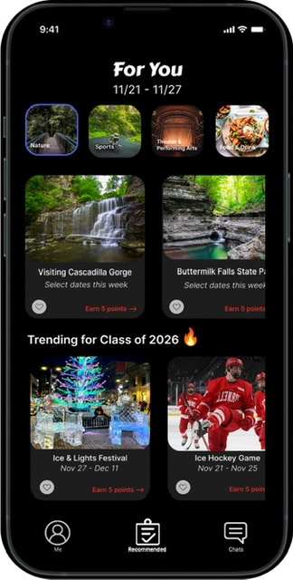

Cornell University · INFO 3450 UX Design · Fall 2022
Helping First-Year Students Discover Their Ithaca
An end-to-end UX research and interaction design project empowering first-year college students to explore off-campus activities that match their interests, schedules, and transit routes.
Help first-years discover off-campus events matching interests, class schedules & TCAT transit.
Executive Summary / Quick Scan
The Challenge
First-year students unfamiliar with Ithaca face fragmented event info, busy academic schedules, and transit confusion, leading them to feel disconnected outside campus.
My Approach
Led contextual inquiry interviews with 4 freshmen, synthesized activity notes via FigJam affinity diagramming, built archetypal personas, developed 4 task storyboards, and iterated paper sketches into Figma prototypes.
Key Outcome
Designed a high-fidelity iOS mobile app with interest matching, schedule-aware recommendations, verified student reviews, TCAT route finder, and social messaging.
When first-year students arrive in Ithaca, they adjust to an unfamiliar environment and experience living independently for the first time. Many freshmen come from outside of Ithaca and do not know how to navigate or get around beyond the immediate campus perimeter.
This project aims to research and deliver a comprehensive mobile solution for this problem, specifically targeting first-year students transitioning into Ithaca. We tackled the core challenges our interviewees experienced by designing a solution that helps them discover off-campus events that match their personal interests, fit seamlessly around their course schedules, and provide convenient commute and public transit guidance.
"How might we empower first-year students from outside Ithaca to effortlessly discover, schedule, and travel to off-campus events with their peers?"
02. Understanding First-Year Student Experiences
To understand how first-year students adjust to living in Ithaca, we conducted contextual interviews with 4 first-year students who had never lived in or visited Ithaca prior to college.
We inquired about their background, their impressions of living in Ithaca, how they currently explore outside the campus perimeter, and what activities they hope to experience in their free time. Following each interview, the designated note-taker created detailed activity notes based on raw interview transcripts, session summaries, audio recordings, and contextual session photos.
03. Data Analysis & Affinity Mapping
We clustered the activity notes using an affinity diagram in FigJam and interpreted the emerging clusters to draw actionable behavioral insights from our user research data.
The methods freshmen use to discover event info are heavily fragmented. Students must search across multiple disconnected social platforms and bulletin boards to understand event schedules and specific activities.
Insight 02 · Academics
Limited Free Time
Freshmen have difficulty carving out time for off-campus events because they are preoccupied with demanding course loads, prelim study sessions, and student organization commitments.
Insight 03 · Commute
TCAT Transit Confusion
Most freshmen come from outside Ithaca and must learn the local TCAT bus system from scratch. Students experience navigation anxiety getting the timetable and stop info needed to travel off-campus confidently.
Insight 04 · Social
Shared Quality Time
Freshmen place high value on quality time with friends. They seek meaningful connections in and out of class—peers to study with, dine with, and explore new local spots together.
04. Target User Persona
Based on our interview synthesis and affinity mapping data, we synthesized our primary archetypal persona, Jess, to serve as the guiding anchor for all subsequent design decisions.
Persona Profile
Jess, 18
Cornell Freshman from outside Ithaca · Adjusting to campus life, eager to explore the Finger Lakes area while balancing rigorous academics.
Core Motivations
Wants to discover unique nature experiences, gorges, and local downtown events.
Wants to coordinate outings with friends without conflicting with class schedules.
Key Frustrations
Overwhelmed by scattered event announcements across disparate flyers and apps.
Unsure how to navigate local bus routes and timetable schedules to reach off-campus destinations.
We conducted comparative research on existing event discovery and transit applications. Each teammate then generated 15 diverse design concepts targeting the persona's goals.
Collaborative ideation: 15 concept sketches per teammate addressing onboarding, discovery, and navigation.
Synthesizing into a First-Pass UI Sketch
We synthesized the strongest concepts into a cohesive user flow and drew an end-to-end hand-drawn interface sketch covering onboarding, interest selection, personalized feeds, event details, community reviews, and user profiles.
First-pass paper UI flow: Welcome screen, interest tags, "For You" recommendations, review submissions, and profile.
06. Defining User Tasks & Storyboarding
To ground our prototype in realistic usage contexts, we defined four core user tasks rooted in Jess's goals. We illustrated a storyboard for each task to evaluate how these interactions unfold in daily student life.
01
Find a Unique Experience in Nature
Persona Goal: Gain Unique College Experiences
Scenario: Jess wants to explore Ithaca's natural scenery over the weekend. She browses nature-tagged activities on Ithaca Hunt and finds an organized trail walk at Cascadilla Gorge.
02
Add a Recommended Event to Calendar
Persona Goal: Stay on Top of Academics
Scenario: Jess selects a recommended outdoor trail event and syncs it directly to her personal academic calendar to ensure it does not overlap with study hours.
03
Message Someone Interested in Similar Events
Persona Goal: Make Friends with Similar Interests
Scenario: Jess navigates to the event chat channel, connects with classmates interested in attending the same concert, and plans a group commute. Open Task 03 wireframe in Figma ↗
04
Find a Bus Route to a Recommended Event
Persona Goal: Seamless Transit & Navigation
Scenario: Jess checks the built-in transit tab to find real-time TCAT bus routes, departure schedules, and walking directions from her dorm to the downtown event.
07. Prototype Drafts & Usability Iterations
We drafted our wireframe flows in Figma and conducted moderated usability testing sessions across realistic task scenarios to refine layout hierarchy, navigation labels, and review incentives.
Draft #2 Figma wireframe flows incorporating user testing feedback — Open in Figma ↗
08. Final High-Fidelity Prototype
The final interactive prototype brings together personalized interest matching, schedule filtering, community-generated reviews, gamified incentives, student profile management, and direct messaging.
01 · Onboarding
Select Your Interests: Users can select any number of interest tags to bootstrap their recommendation algorithm.

02 · Smart Feed
For You Feed: Dynamically serves personalized event recommendations tailored to academic schedules and interests.
03 · Peer Insights
Event Reviews: Attendees read authenticated peer reviews to gauge event vibe, attendance, and safety.
04 · Gamification
Review & Rewards: Users earn points, level up badges, and unlock local discounts by sharing event reviews.
05 · Profile
Profile Dashboard: View unlocked badges, saved events, active interest tags, and connected friends.
06 · Social Chats
Direct & Group Chats: Coordinate meetups and travel together with peers attending the same activities.
Interactive Video Demo
Final Prototype Walkthrough
Watch the complete interactive video demonstration showing Ithaca Hunt in action.
Over the course of this semester, I learned the paramount importance of being deeply passionate and committed to designing for our target user base. Our team resonated strongly with the challenge of adjusting to a new environment because each of us could recall the hurdles we experienced as first-year and transfer students.
By engaging users continuously throughout the iterative design lifecycle, we validated that this problem is deeply felt by new students eager to explore outside campus. Constant communication, structured team check-ins, and multiple wireframe iterations ensured that direct user feedback directly shaped the final experience.
Opportunities for Future Expansion
Adaptive Recommendation Engine: Expand the "For You" feed by training recommendation models on past event attendance history and friend graph interests.
Student-Created Community Events: Allow verified students to create grassroots social gatherings (e.g. group ice skating, museum hops, study cafe crawls) to help peers feel at home in Ithaca.
Live TCAT Transit Tracking: Integrate live GPS bus tracking directly within the event detail view for turn-by-turn departure alerts.